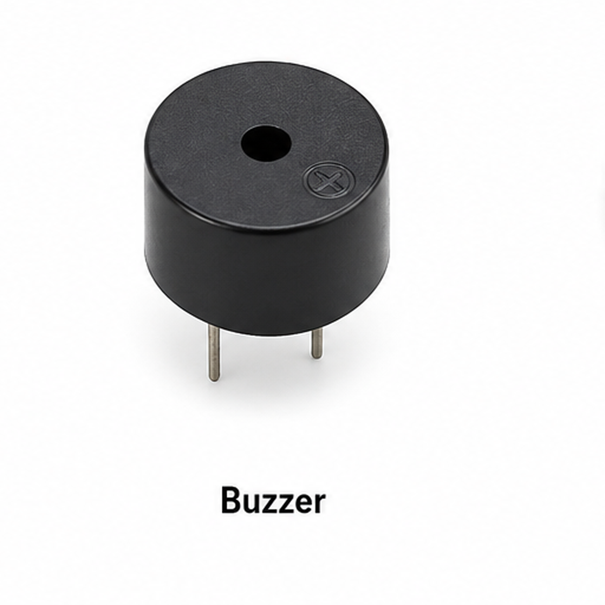
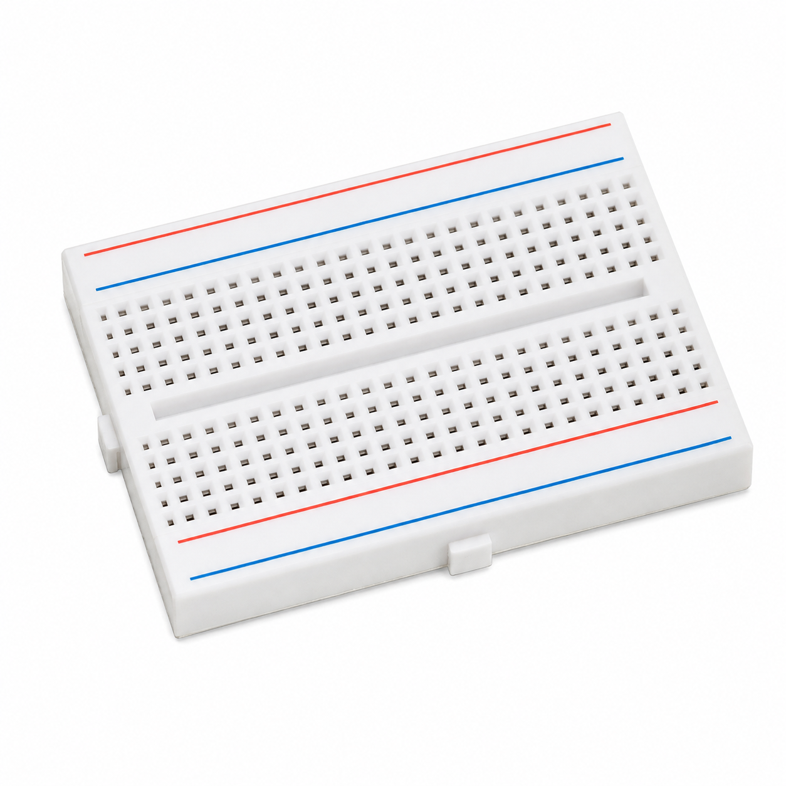

Poultry_AirGuard.ino

Poultry AirGuard

To develop a poultry-environment monitoring and ventilation-control prototype using an ESP32 development board, MQ-2 gas sensor, DHT22 temperature and humidity sensor, OLED display, servo-operated damper, relay-controlled fan, status LEDs and buzzer.
The experiment demonstrates automatic environmental status classification and local Wi-Fi monitoring.
Poultry AirGuard is an ESP32-based educational experiment designed to demonstrate environmental monitoring and automated ventilation responses.
The MQ-2 gas sensor provides an analog voltage to GPIO34. The ESP32 converts this reading into a simulated gas-related scale ranging from 0 to 100.
The DHT22 sensor measures temperature and relative humidity through GPIO12.
Based on the simulated gas value, the system selects SAFE, CAUTION or DANGER and automatically operates the ventilation fan, servo damper, colored LEDs and buzzer.
The SSD1306 OLED displays the simulated gas value, temperature, humidity and system status. A local Wi-Fi dashboard provides browser-based monitoring.
| Condition | Simulated Gas Scale | System Response |
|---|---|---|
| SAFE | 0–20 | Green LED ON, fan OFF, servo 0°, buzzer OFF |
| CAUTION | 21–40 | Yellow LED ON, fan ON, servo 90°, buzzer OFF |
| DANGER | 41–100 | Red LED ON, fan ON, servo 180°, buzzer ON |
MQ-2 is not an ammonia-specific sensor. The simulated gas value is not an NH3 concentration in ppm. The selected thresholds are for educational demonstration only.
This prototype must not be relied on as an animal welfare, occupational safety or real poultry-house ventilation protection system.
In the supplied operating logic, temperature and humidity are monitored and displayed, but do not independently control the ventilation outputs.

Main controller with Wi-Fi connectivity.

Provides the analog gas-related proxy reading.

Measures environmental temperature and humidity.

Displays environmental readings and status.

Demonstrates ventilation-damper movement.

Switches the ventilation fan.

Demonstrates automatic ventilation.

Indicates SAFE status.

Indicates CAUTION status.

Indicates DANGER status.

Limits current through the three LEDs.

Provides an audible DANGER alert.

Used for assembling low-voltage connections.

Used for component connections.
Install ESP32 board support, U8g2, DHTesp and ESP32Servo before compiling the sketch.
| Component Pin | ESP32 Connection |
|---|---|
| MQ-2 AOUT | GPIO34, with voltage protection if required |
| MQ-2 VCC | Supply according to the module rating |
| MQ-2 GND | GND |
| DHT22 DATA | GPIO12 |
| DHT22 VCC | 3V3, if supported |
| DHT22 GND | GND |
| OLED SDA | GPIO21 |
| OLED SCL | GPIO22 |
| OLED VCC | 3V3 |
| OLED GND | GND |
| Servo Signal | GPIO18 |
| Servo Supply | Suitable regulated servo supply |
| Relay IN | GPIO26 |
| Relay VCC | Compatible relay-module supply |
| Relay GND | GND |
| Green LED | GPIO25 through 220Ω |
| Yellow LED | GPIO33 through 220Ω |
| Red LED | GPIO32 through 220Ω |
| LED Cathodes | GND |
| Buzzer Positive / Signal | GPIO27, through driver if required |
| Buzzer Negative | GND |
The fan is switched through the relay contacts, not directly from the ESP32 GPIO.
| Connection | Purpose |
|---|---|
| Fan supply positive → Relay COM | Power input to the switched circuit |
| Relay NO → Fan positive | Supplies power when the relay closes |
| Fan negative → Fan supply negative | Completes the fan circuit |
Many MQ-2 modules require 5V for their heater, and their analog outputs can exceed 3.3V. Protect GPIO34 using a suitable voltage-scaling circuit.
GPIO12 is an ESP32 boot-strapping pin. The DHT22 connection must not force an unsuitable voltage during startup. Confirm the pull-up arrangement and successful booting.
Many relay boards are active-LOW, while this experiment assumes active-HIGH operation. Confirm the module polarity before connecting the fan.
The relay must be rated for the fan current and compatible with the ESP32 control signal. Do not power the fan or servo directly from an ESP32 GPIO.

The MQ-2 produces an analog voltage related to its response to certain gases and smoke. The experiment maps this ADC voltage to a simulated 0–100 scale.
The DHT22 measures temperature and humidity approximately every 2.5 seconds. Invalid measurements are reported as sensor errors.
The green LED activates, the fan remains OFF, the servo moves to 0°, and the buzzer remains OFF.
The yellow LED activates, the fan turns ON, the servo moves to 90°, and the buzzer remains OFF.
The red LED activates, the fan remains ON, the servo moves to 180°, and the buzzer turns ON.
The ESP32 hosts a local web dashboard. The browser retrieves the simulated gas value, temperature, humidity, fan state and damper angle.
ESP32 Experiment · Code Review
Select any explanation tab to highlight the complete matching program section in blue. Copy Code copies the full sketch.
Each tab highlights its actual corresponding source-code section rather than an arbitrary number of lines.
The MQ-2 responds to several combustible gases and smoke. It cannot provide calibrated ammonia measurements with this code.
The DHT22 returns temperature and relative humidity. The code checks for invalid sensor values.
The relay switches the fan's separate power circuit. Its input polarity must match the firmware.
The servo moves to 0°, 90° or 180° based on the simulated status. Actual available travel depends on the servo model.
The ESP32 hosts an HTML page and a JSON endpoint. The browser periodically updates its readings.
Answers: GPIO34; DHT22; GPIO26; 90°; DANGER state; no.
Try It: Observe simulated gas values and verify the corresponding LED, fan, damper and buzzer responses while monitoring temperature and humidity.
Starting Poultry AirGuard... Connecting to Wi-Fi... Wi-Fi connected. Dashboard: http://192.168.x.x Web server started. Monitoring started.
Gas(sim): 15 | SAFE | Fan OFF | Damper 0 Gas(sim): 30 | CAUTION | Fan ON | Damper 90 Gas(sim): 55 | DANGER | Fan ON | Damper 180
POULTRY AIRGUARD Gas(sim): 15 Temp: 29.5 Hum: 65.0 SAFE
POULTRY AIRGUARD Gas(sim): 30 Temp: 30.0 Hum: 68.0 CAUTION
POULTRY AIRGUARD Gas(sim): 55 Temp: 31.0 Hum: 70.0 DANGER
| State | Fan | Damper | Buzzer |
|---|---|---|---|
| SAFE | OFF | 0° | OFF |
| CAUTION | ON | 90° | OFF |
| DANGER | ON | 180° | ON |
The Poultry AirGuard prototype demonstrates environmental monitoring with MQ-2 and DHT22 sensors, automated ventilation outputs, OLED feedback and local Wi-Fi dashboard visualization.
The ESP32 classifies the simulated gas input into SAFE, CAUTION and DANGER states and operates the fan relay, servo damper, LEDs and buzzer accordingly.
The experiment is suitable for understanding embedded control principles, but not as a calibrated poultry-house safety system.